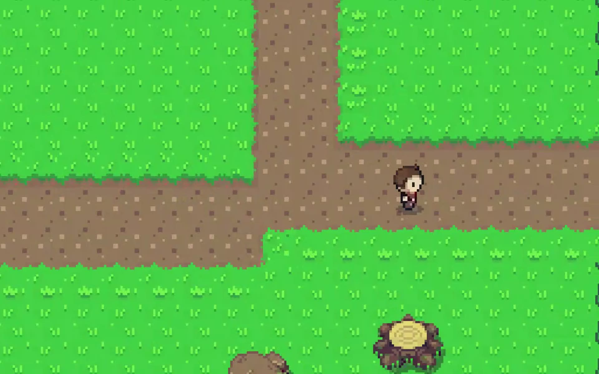

Experience
An adventure game focused on exploration, movement, and interactive levels.

Description
The environment gives movement a purpose by placing routes, obstacles, and points of interest in relation to one another. The character’s position determines which part of that space can be examined next.
The saved project description identifies the particular setting and interactions available in this entry. The overview does not invent a larger campaign or progression system beyond that documented scope.
Detailed features
World exploration
Movement and viewpoint work together to make the space readable. The player uses the controls to choose a route, judge distance, and position the character for the next interaction.
Character control
Movement and viewpoint work together to make the space readable. The player uses the controls to choose a route, judge distance, and position the character for the next interaction.
Environment interaction
This part of the project contributes to the core interaction described above. Its role is presented through the project’s available interface, source, and visual preview.
Build summary
The Unity source separates the project into runtime C# components. The saved code includes rigidbody physics, collision / trigger events, animation control, ui components. The script examples below identify concrete parts of this project’s implementation.
- Technology
- Unity
- Scope
- Unity project
- Feature focus
- World exploration
Implementation details
Implementation examples
PlayerControls.csCameraMovement.csPlayerMovement.csSign.csRoomMove.cs
Feature video
Project recording · 1920 × 1200 · Original resolution